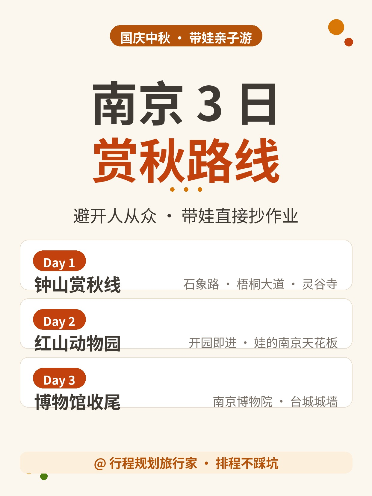
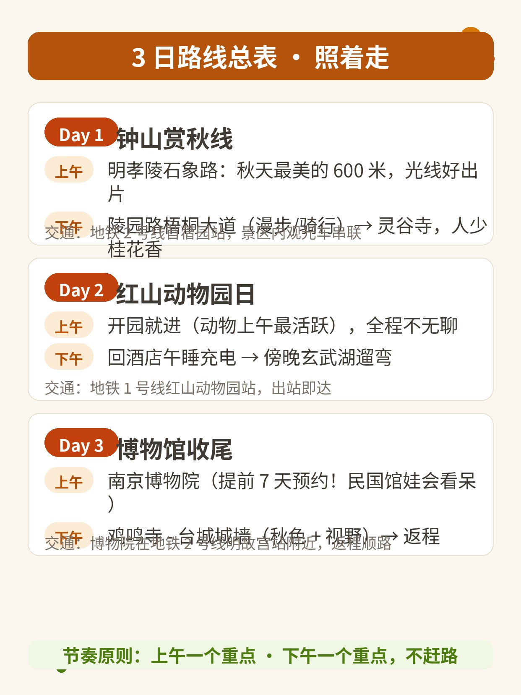
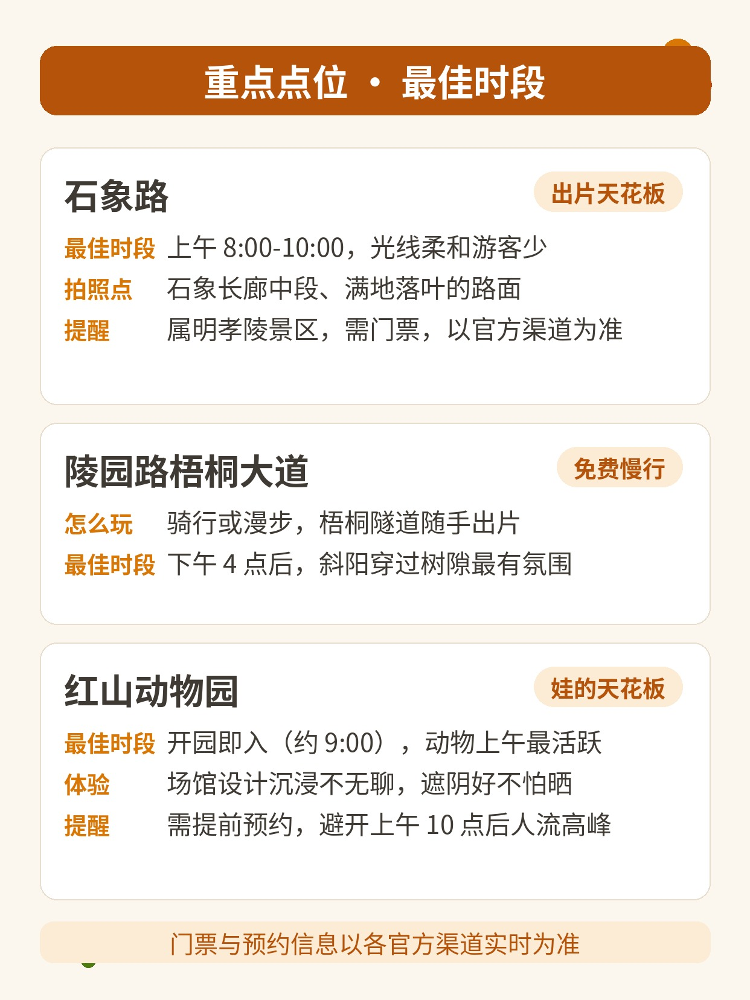
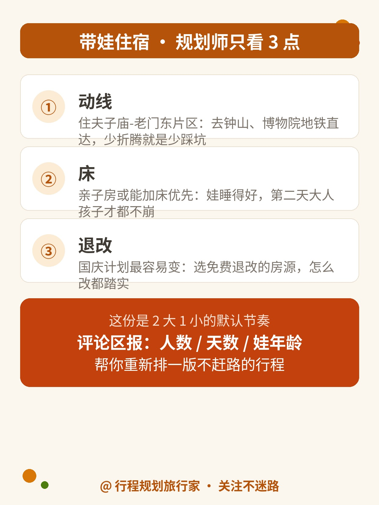

🍁国庆带娃去南京，既怕钟山人山人海，又想看石象路的秋色、逛博物院、去红山看动物，那这份不赶路的 3 日赏秋路线，我按"上午一个重点、下午一个重点"的节奏排好了～ ✅Day1 钟山赏秋线：明孝陵石象路（秋天最美的 600 米，上午光线好出片）→陵园路梧桐大道（漫步或骑行）→灵谷寺（人少清净，桂花香） ✅Day2 红山动物园日：上午开园就进（动物上午活跃），本地朋友都说是"带娃南京天花板"，场馆设计全程不无聊；下午娃电量耗尽，回酒店午睡，傍晚玄武湖遛弯 ✅Day3 博物馆收尾：南京博物院（记得提前 7 天预约！民国馆娃会看呆）→鸡鸣寺-台城城墙（秋色+视野）→返程 🏨带娃住哪（规划师只看这三点） ①动线：住夫子庙-老门东片区，去钟山、博物院地铁直达，不折腾 ②床：亲子房或能加床优先，娃睡好，第二天才不崩 ③退改：国庆计划容易变，选免费退改的房源，踏实 🫰这份默认是 2 大 1 小的节奏。如果你家是老人同行、娃还没上小学、或者只有 2 天——评论区说下人数、天数和娃的年龄，我帮你重新排一版不赶路的～